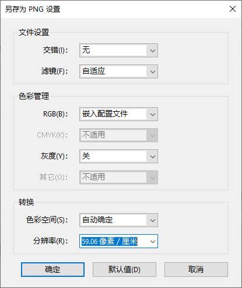
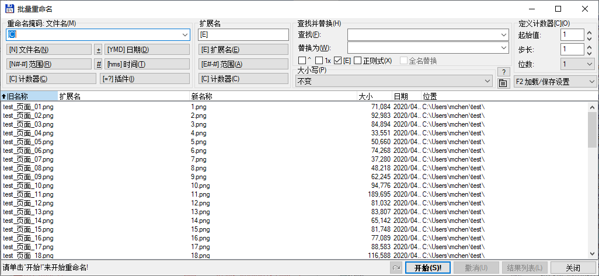

将「多页打印」的PDF文件转为单页文件
条评论方案：将PDF输出为图片，将图片批量裁剪后合并为PDF
平台：Windows 10 1909 + Adobe Acrobat DC Pro + Imagemagick (+ Total Commander）
出于一些版权的原因，一些老师经常将PPT课件虚拟打印成pdf文件发放给学生。然而「多页打印」这种存在只适合拿到课件就去打印店印成纸质版本，并不适合在电脑或者手机上查看。所以这里给出一种折中的方法把老师们版权保护的pdf文档重新转化成单页的pdf文档或者是ppt。
Step 1 输出图片
首先将需要处理的pdf文档输出为图片文件，可以新建一个文件夹存放所有文件。这里使用的是Adobe Acrobat DC Pro，当然如果有其他可以有指定分辨率输出图片的方法当然更好。使用Acrobat DC需要注意设置好分辨率，按需求选用恰当的分辨率（这里软件语言是中文，所以单位是像素/厘米，而不是更熟悉的dpi），固定输出的每张图片分辨率都相同。

获得图片后，需要对文件进行重命名，文件名具有规律的排列，比如像1.png、2.png、3.png…或是fig1.png、fig2.png、fig3.png…这种形式，文件名中目前含不能含有中文字符（全角括号也不可以！所以当系统语言是中文的情况下并不能用系统文件管理器的重命名），因为ImageMagick不大支持。
对输出图片的批量重命名，比较方便的可以使用批处理，无需引入其他的软件，可将下方的命令[1]复制另存名为rename.bat的批处理文件，双击运行该批处理文件可以将该文件夹下所有.jpg格式图片重命名。
1 | @echo off |
使用批处理修改文件名也可以支持更复杂的形式，不过出于学习成本的考虑可以使用一些带有GUI的软件，比如Bulk Rename Utility。这里实际使用的是文件管理器Total Commander中带有的批量重命名功能。

Step 2 剪切图片
获得所有图片后，可以使用ImageMagick批量剪切图片了。首先可以新建临时文件夹tmp存放切好的图片。
可将下方命令存为批处理文件crop.bat，文件夹内双击运行。
1 | for /l %%x in (1, 1, 106) do ( |
该命令将待处理图片按顺序逐一剪切，其中需要修改需处理的图片数、输入文件名、输出文件名以及剪切方式，
1495x1120+492+464的意思是从图片中像素位置(492,464)开始剪切像素大小为1495x1120的图片，像素位置可以使用图片查看软件读取。
Step 3 合并文件
使用Acrobat DC合并所有图片，即可以得到单页的pdf课件。使用中可以依需求适当降低像素，建小文件大小。
其他想法
当然这种方法会不可避免的丢失课件或文档中的文字信息，或许可以使用OCR软件如ABBY重新识别扫描文字层。
另外这种方法也可以用来从直播或者视频中通过截屏的方式备份课件。
Reference
本文标题：将「多页打印」的PDF文件转为单页文件
文章作者：Michael Chen
发布时间：2019-11-04
最后更新：2022-02-20
原始链接：https://mchen.xyz/post/crop-lecture-pdf-into-slides.html
版权声明：本博客所有文章除特别声明外，均采用 CC BY-NC-SA 3.0 CN 许可协议。转载请注明出处！